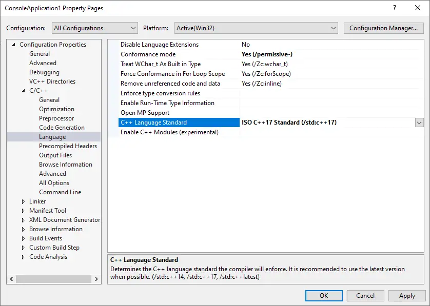
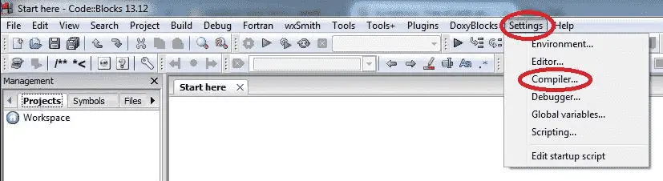
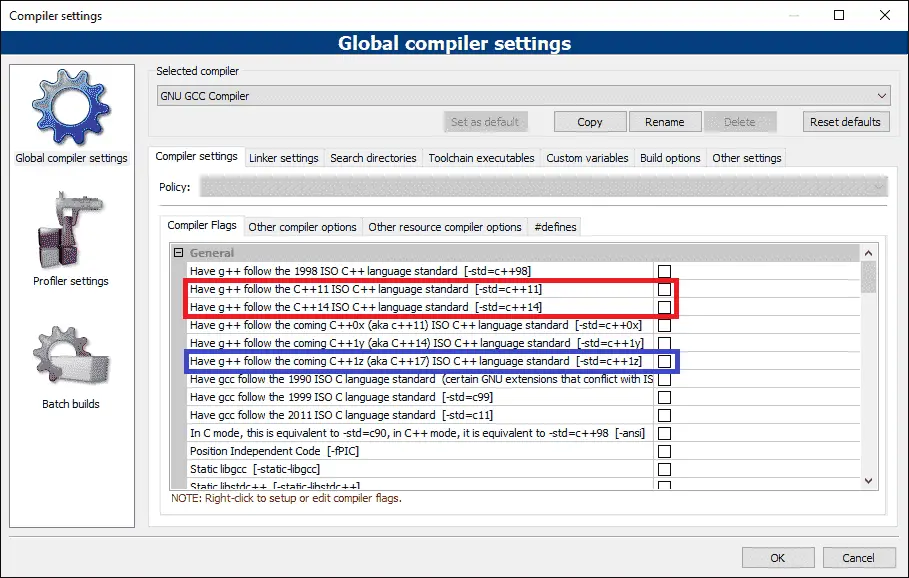

0.12 — Configurer votre compilateur : choisir une norme du langage
Avec les nombreuses versions de C++ disponibles (C++98, C++03, C++11, C++14, C++17, C++20, C++23, etc.), comment votre compilateur sait-il laquelle utiliser ? En général, un compilateur choisit une norme par défaut. Cette norme par défaut n'est généralement pas la plus récente : beaucoup de compilateurs utilisent par défaut C++14, qui ne contient pas bon nombre des fonctionnalités les plus récentes et les plus utiles.
Si vous souhaitez utiliser une autre norme du langage (et vous voudrez probablement le faire), vous devrez configurer votre EDI ou votre compilateur en conséquence.
Les noms usuels des normes du langage (par exemple C++20) sont basés sur l'année de publication de la norme (ou l'année prévue pour sa publication). Comme l'année de publication n'est connue avec certitude que lorsqu'elle approche, les normes encore en cours de développement portent parfois un nom de développement. Par exemple, C++20 est aussi appelé C++2a.
| Année de publication | Nom formel | Nom usuel | Nom de développement | Remarques |
|---|---|---|---|---|
| 2011 | ISO/IEC 14882:2011 | C++11 | C++0x | |
| 2014 | ISO/IEC 14882:2014 | C++14 | C++1y | |
| 2017 | ISO/IEC 14882:2017 | C++17 | C++1z | |
| 2020 | ISO/IEC 14882:2020 | C++20 | C++2a | |
| 2024 | ISO/IEC 14882:2024 | C++23 | C++2b | Finalisée (techniquement complète) en 2023 |
| À déterminer | À déterminer | C++26 | C++2c |
En passant…
C++11 a pour nom de développement C++0x parce qu'il était initialement prévu qu'il soit publié avant 2010.
Quelle norme du langage choisir ?
Dans un contexte professionnel, il est courant de choisir une norme du langage située une ou deux versions en arrière par rapport à la dernière norme finalisée (par exemple, si C++20 était la dernière version finalisée, on choisirait C++14 ou C++17). Cela permet généralement de laisser aux éditeurs de compilateurs le temps de corriger les défauts, et de bien comprendre les bonnes pratiques associées aux nouvelles fonctionnalités. Lorsque c'est pertinent, cela favorise aussi une meilleure compatibilité entre plateformes, car les compilateurs de certaines plateformes ne prennent pas immédiatement en charge les normes les plus récentes.
Pour les projets personnels et pendant l'apprentissage, nous recommandons de choisir la dernière norme finalisée, car cela présente peu d'inconvénients.
Astuce
Beaucoup de compilateurs proposent une prise en charge « expérimentale » ou « en avant-première » des fonctionnalités des prochaines normes, non encore finalisées. Votre EDI peut proposer cette option dans les paramètres où vous configurez la norme du langage, ou vous pouvez l'activer manuellement en utilisant le nom usuel ou le nom de développement de la prochaine norme.
La prise en charge des fonctionnalités de normes non finalisées sera incomplète et potentiellement pleine de bogues.
Note de l'auteur
Ce site cible actuellement la norme C++17, ce qui signifie que nos leçons et nos exemples supposent que votre compilateur est capable de compiler du C++17. Certains contenus C++20 et C++23 sont disponibles pour ceux qui disposent d'un compilateur compatible.
Pour profiter pleinement de tout le contenu des leçons, nous recommandons d'utiliser la dernière norme du langage prise en charge par votre compilateur.
Si votre compilateur ne prend pas en charge C++17, nous vous recommandons de le mettre à jour vers une version qui le prend en charge, ou d'utiliser un compilateur en ligne compatible avec C++17 ou une version plus récente pendant votre apprentissage.
Rappel
Lorsque vous changez la norme du langage (ou tout autre paramètre de projet), effectuez la modification pour toutes les configurations de compilation.
Définir la norme du langage dans Visual Studio
Au moment de la rédaction, Visual Studio 2022 utilise par défaut les capacités de C++14, ce qui ne permet pas d'utiliser les fonctionnalités plus récentes introduites en C++17 et C++20.
Pour utiliser ces fonctionnalités, vous devrez activer une norme plus récente. Malheureusement, il n'existe actuellement aucun moyen de le faire globalement : vous devez le faire projet par projet.
Attention
Avec Visual Studio, vous devrez resélectionner votre norme du langage à chaque création d'un nouveau projet.
Pour sélectionner une norme du langage, ouvrez votre projet, puis allez dans le menu Projet > Propriétés de (nom de votre application), et ouvrez Propriétés de configuration > C/C++ > Langage.

Commencez par vérifier que Configuration est défini sur « Toutes les configurations ».
Vous pouvez ensuite définir Norme du langage C++ sur la version de C++ que vous souhaitez utiliser.
Astuce
Nous recommandons de choisir la dernière norme « ISO C++ Latest (/std:c++latest) », qui vous garantit de pouvoir utiliser autant de fonctionnalités que votre compilateur en prend en charge.
Assurez-vous de sélectionner la norme du langage dans la liste déroulante (ne la saisissez pas manuellement).
Contenu associé
Pour plus d'informations sur les paramètres de norme du langage dans Visual Studio, Microsoft propose une documentation de référence sur la norme du langage Visual Studio.
Définir la norme du langage dans Code::Blocks
Code::Blocks peut utiliser par défaut une norme antérieure à C++11. Vous voudrez certainement vérifier et vous assurer qu'une norme plus moderne est activée.
Bonne nouvelle : Code::Blocks permet de définir la norme du langage globalement, vous n'avez donc besoin de le faire qu'une seule fois (et non projet par projet). Pour cela, allez dans le menu Settings > Compiler… :

Recherchez ensuite les cases à cocher intitulées Have g++ follow the C++XX ISO C++ language standard [-std=c++XX], où XX est un nombre (par exemple 20, 17, etc.) représentant une norme du langage :

Si C++23, C++20 ou C++17 figurent dans cette liste, sélectionnez celle qui correspond à la dernière norme ISO (par exemple Have g++ follow the C++20 ISO language standard). Si vous voyez aussi des normes GNU dans cette liste, ignorez-les.
Si C++17 n'apparaît pas dans cette liste, mettez à jour Code::Blocks vers la dernière version.
Attention
Au moment de la rédaction, la version actuelle de Code::Blocks (20.03) utilise un compilateur obsolète (GCC 8.1.0).
Nous recommandons de mettre à jour votre compilateur en mettant à jour MinGW. La procédure à suivre se trouve dans la section consacrée à Code::Blocks de la leçon 0.6 -- Installer un environnement de développement intégré (EDI).
Astuce
Après la mise à jour vers la dernière version de MinGW, vous pouvez vérifier si de nouvelles cases de norme apparaissent dans le menu Settings > Compiler…. Si ce n'est pas le cas, vous pouvez sélectionner manuellement une version de C++ comme suit :
- Ouvrez l'onglet « Other compiler options » de la boîte de dialogue « Global Compiler Settings ».
- Ajoutez l'une des options de compilation suivantes :
-std=c++11,-std=c++14,-std=c++17,-std=c++20ou-std=c++23(pour activer respectivement la prise en charge de C++11/14/17/20/23). Vous pouvez aussi essayer le dernier nom de code (par exemple-std=c++2c) pour une prise en charge expérimentale des fonctionnalités de la prochaine norme du langage.
Définir la norme du langage avec GCC/G++/Clang
Pour GCC/G++/Clang, vous pouvez utiliser les options de compilation -std=c++11, -std=c++14, -std=c++17, -std=c++20 ou -std=c++23 (pour activer respectivement la prise en charge de C++11/14/17/20/23). Si vous utilisez GCC 8 ou 9, vous devrez utiliser -std=c++2a pour bénéficier de la prise en charge de C++20. Vous pouvez aussi essayer le dernier nom de code (par exemple -std=c++2c) pour une prise en charge expérimentale des fonctionnalités de la prochaine norme du langage.
Définir la norme du langage pour VS Code
Pour VS Code, vous pouvez appliquer les règles ci-dessus concernant GCC/G++/Clang.
Placez l'option de norme appropriée (en incluant les guillemets doubles et la virgule) dans le fichier de configuration tasks.json, dans la section "args", sur sa propre ligne, avant "${file}".
Nous souhaitons également configurer IntelliSense pour utiliser la même norme du langage. Pour C++20, dans settings.json, modifiez ou ajoutez le paramètre suivant sur sa propre ligne : "C_Cpp.default.cppStandard": "c++20".
Quelle norme du langage mon compilateur utilise-t-il actuellement ?
Ce sujet a été déplacé vers la leçon suivante. Voir 0.13 -- Quelle norme du langage utilise mon compilateur ?.
Exporter votre configuration
Devoir resélectionner toutes vos options à chaque création d'un nouveau projet est fastidieux. Heureusement, la plupart des EDI permettent d'exporter vos paramètres. Cela se fait généralement en créant un nouveau modèle de projet avec les paramètres souhaités, puis en sélectionnant ce modèle lors de la création d'un nouveau projet.
Pour les utilisateurs de Visual Studio
Dans Visual Studio, cette option est disponible via Projet -> Exporter un modèle. Sélectionnez « Modèle de projet », ajoutez un nom et une description facultative (par exemple application console C++20), puis cliquez sur « Terminer ».
La prochaine fois que vous créerez un nouveau projet, ce modèle apparaîtra dans votre liste de modèles de projet.
Une fois le projet créé à partir de ce modèle, il peut ne pas ouvrir de fichiers. Vous pouvez ouvrir votre fichier .cpp dans la fenêtre Explorateur de solutions en allant dans Solution -> <Nom du projet> -> Fichiers sources -> <nom du modèle>.cpp.
Février 2025 : le lecteur Mingtao Yue a aimablement laissé un commentaire proposant des solutions de contournement pour quelques bogues de cette fonctionnalité.
Pour les utilisateurs de Code::Blocks
Dans Code::Blocks, choisissez File -> Save project as template. Donnez un titre à votre modèle, puis enregistrez.
Lorsque vous créerez un nouveau projet, vous trouverez ce modèle sous l'option « User templates ».
Où puis-je consulter le document de la norme C++ ?
Chaque norme du langage C++ est décrite par un document de norme, un document technique formel qui fait autorité pour les règles et les exigences d'une norme donnée. Le document de norme n'est pas conçu pour l'apprentissage : il est destiné aux écrivains de compilateurs, afin qu'ils puissent implémenter fidèlement les nouvelles normes. Vous verrez parfois des personnes citer ce document pour expliquer le fonctionnement de certains éléments.
Le document de norme C++ officiel pour une norme donnée n'est pas disponible gratuitement. Un lien permettant d'acheter la dernière norme se trouve ici.
Lorsqu'une nouvelle norme du langage est en cours d'élaboration, des projets de documents de norme sont publiés pour relecture. Ces projets sont disponibles gratuitement en ligne. Le dernier projet précédant la norme approuvée est généralement suffisamment proche de la norme officielle pour la plupart des usages. Vous trouverez les projets de normes ici.
Les compilateurs ont souvent un support incomplet des nouvelles fonctionnalités
Même après la finalisation d'une norme du langage, les compilateurs qui la prennent en charge présentent souvent encore un support manquant, partiel ou bogué pour certaines fonctionnalités.
Si vous essayez de compiler un programme qui devrait compiler sans y parvenir mystérieusement, la cause est probablement l'une des deux suivantes :
- Votre compilateur est configuré avec une norme du langage plus ancienne qui ne prend pas en charge la fonctionnalité que vous utilisez. Essayez de sélectionner une norme plus récente, puis recompilez votre programme. Vous pouvez utiliser le programme de la leçon 0.13 -- Quelle norme du langage utilise mon compilateur ? pour vérifier que vous avez correctement configuré votre sélection de norme du langage.
- La version de compilateur que vous utilisez peut présenter un support manquant, partiel ou bogué pour une fonctionnalité que vous utilisez.
Le site CPPReference suit la prise en charge de chaque fonctionnalité par les compilateurs, par norme du langage. Vous trouverez ces tableaux de prise en charge via le lien « Compiler Support » (classés par norme du langage), en haut à droite de leur page d'accueil. Par exemple, vous pouvez consulter les fonctionnalités de C++23 prises en charge ici.
Si une version plus récente de votre compilateur prend en charge la fonctionnalité problématique, vous pouvez mettre à jour votre compilateur vers la dernière version et recompiler votre programme. Si la dernière version de votre compilateur ne prend toujours pas en charge la fonctionnalité que vous essayez d'utiliser, vous pouvez soit essayer un autre compilateur qui la prend en charge, soit trouver une solution utilisant un autre ensemble de fonctionnalités.
Source originale : https://www.learncpp.com/cpp-tutorial/configuring-your-compiler-choosing-a-language-standard/